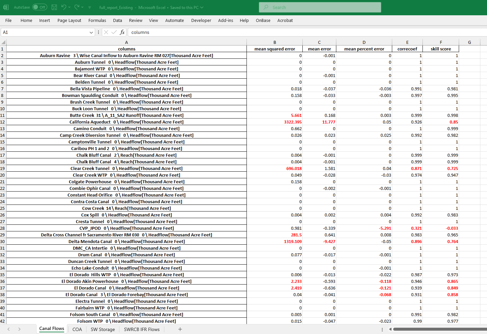

Regression test¶
Purpose¶
The purpose of the regression test is to quickly compare an existing run and an archived run (previous run), display a series of performance metrics and highlight those metrics exceeding predefined thresholds. To perform a regression test, type the following command in a python editor
[ ]:
%run regression_testing.py
or in anaconda, type:
[ ]:
python regression_testing.py
Inputs¶
To customize your run, the input section of ‘regression_testing.py’ is explained below.
Defines a list of favorites to compare. Note that the favorites defined have to exist for both current run and the archived run.
[ ]:
favorites = ["Canal Flows","COA","SW Storage","SWRCB IFR Flows"]
Defines a list of scenarios to compare.
[ ]:
scenarios = ["Existing"]
Define the thresholds for anomaly detection; comment out the metrics by ‘#’ if not needed.
[ ]:
metrics_threshold = {"mean squared error":2.0, #mean squared error
#"mape":0.1, #mean_absolute_percentage_error
"mean error": 2.0, # mean error
"mean percent error": 0.05, #mean percent error
"correcoef":0.9, # correlation coefficient
"skill score":0.9} # Nash-Sutcliffe-like skill score based on mean squared error
Define the run names. Current run can also be defined as ‘Most Recent’. By default, comparisons between only two runs are allowed. If more runs are defined, the script will still export the favorites for all the runs but will give an error when the results are compared.
[ ]:
runs = ['2024-10-24 (1)','2024-10-24 (2)']
Define output path for the favorites.
[ ]:
output_path = "../results"
If results already exist, overwrite or not.
[ ]:
overwrite_results = False
Set the output unit for favorites: only ‘taf’ or ‘cfs’ are implemented. If the outputs is not flow based, the unit will remain unchanged.
[ ]:
favorite_unit = 'taf'
Note that the unit conversion will slow down the script by about 10 seconds. If no unit convertion is required, set favorite_unit to None.
[ ]:
favorite_unit = None
When the script finishes, a table called ‘full_report_%s.xlsx’%scenario will be generated in ouptut_path. The results for each performance metrics will be shown by a separate sheet. The values that exceed the defined thresholds will be highlighted in Red. 